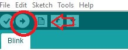

Ensuring connection to your arduino compatible board
Step 1: Ensuring power connection.
- Ensure that your Arduino Board is plugged into your computer, and that at least one LED light on the Arduino board is lit.
- If an LED is lit, proceed to Step 2.
- If an LED is not lit, there may be a fault with either your USB port, USB cable, or Arduino board.
- To troubleshoot this, try plugging the Arduino board to a different USB port on your computer, or try a different USB cable.
- If these do not work, you may have a damaged Arduino Board.
Step 2: Ensuring communication between computer and Arduino Board.
- Right-Click on your Start Menu Icon and Select "Device Manager". A long list of devices should be displayed.
- Look for the label "Ports (COM & LPT)" and click the drop down arrow. You should see at least one entry named "USB-SERIAL CH340 (COMX)"
- If the USB-SERIAL entry is present, proceed to Step 3.
- If the USB-SERIAL entry is not present. You may have a faulty USB cable, you do not have the correct CH340 drivers installed, or a damaged Arduino board.
- To troubleshoot this, install the latest CH340 drivers CH340 Drivers
- After the driver installation, disconnect and reconnect the Arduino board, the USB-SERIAL entry should be present, if not try a different USB cable.
- If this also does not work, you maybe have a damaged Arduino Board.
Step 3: Ensuring that the Arduino board is flashable.
- Open the Arduino IDE, Select
File -> Example -> 0.1 Basics -> Blink. Next selectTools -> Boardand select your Arduino Board. - Next select
Tools -> Portand select the serial port. There should be only one port, labelled "COMX". -
Next press the Right-Arrow to upload the sketch to your Arduino. The Arduino IDE should have displayed "Uploading Done."
-

-
If all the above has been completed, proceed to Step 4.
- If your Arduino IDE does not list the serial port, restart the Arduino IDE.
- If the Arduino IDE says "Problem Uploading to Board", Unplug the Arduino Board, Restart the Arduino IDE, reconnect the Arduino Board and restart Step 3.
- If the problem persists, you may have a damaged Arduino Board.
Step 4: Verifying that the sketch uploaded.
- If an LED on your Arduino Board is flashing: Congratulations! You have flashed an Arduino Board!
- If the Arduino Board is not flashing, your board may be damaged.